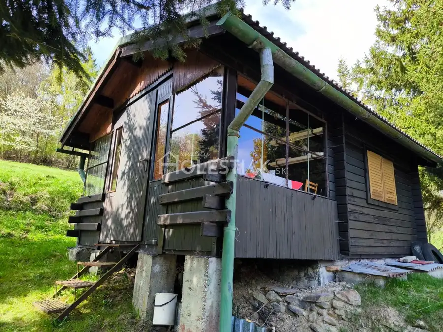
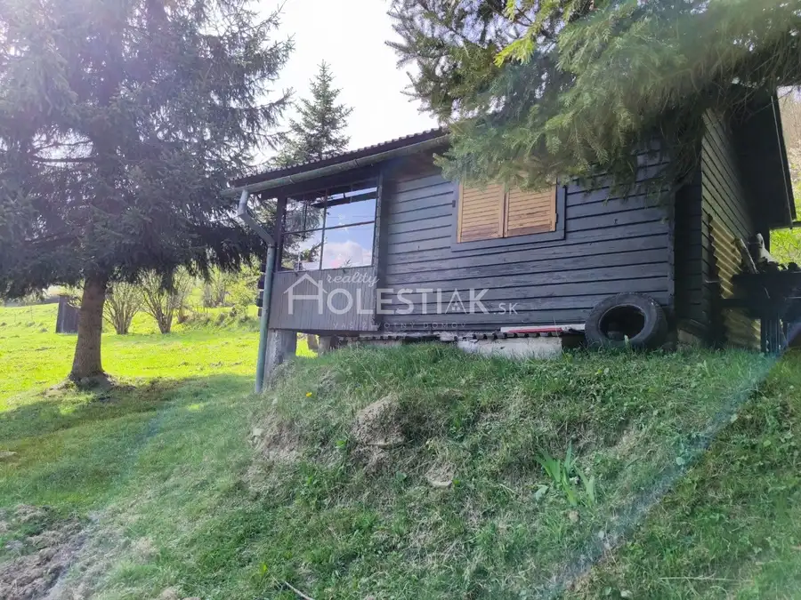
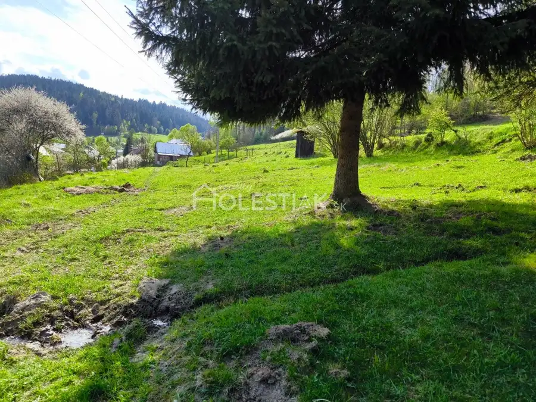
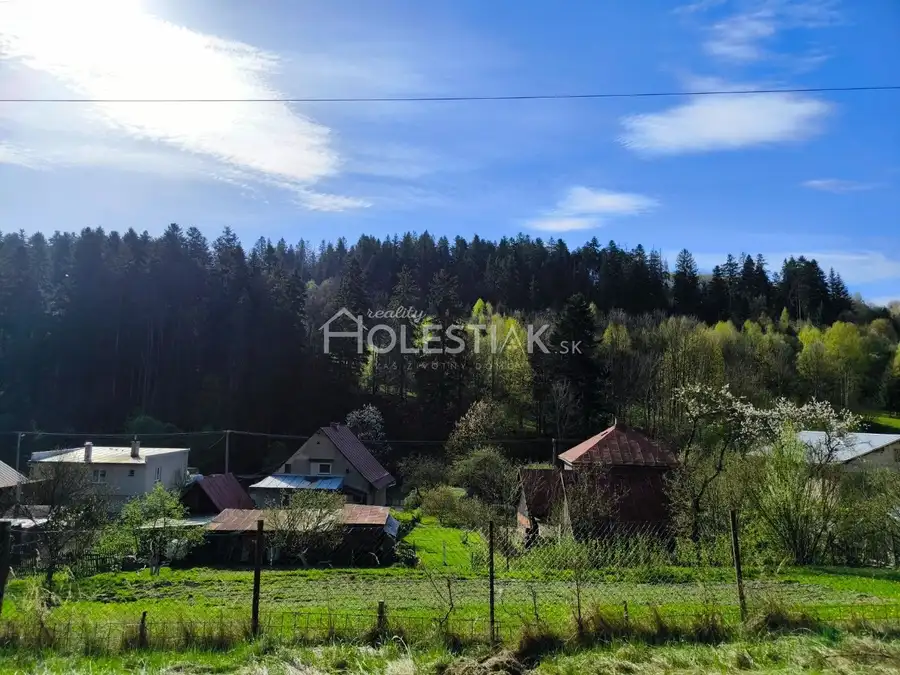
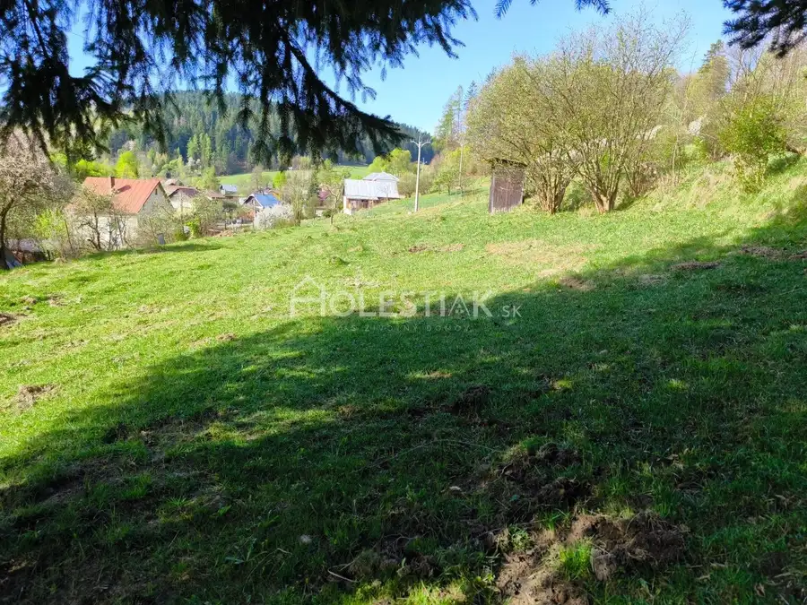
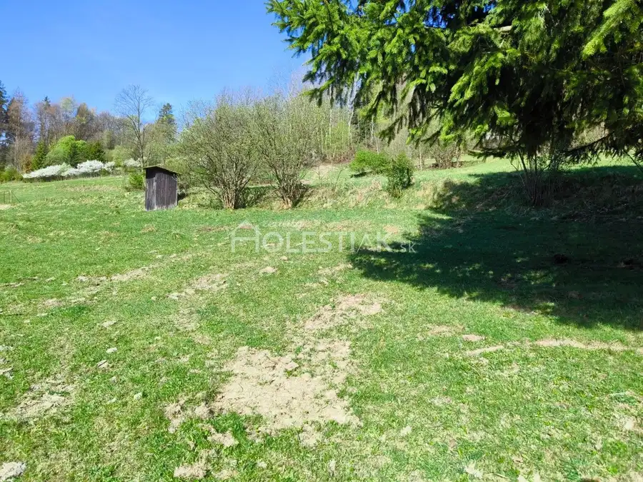
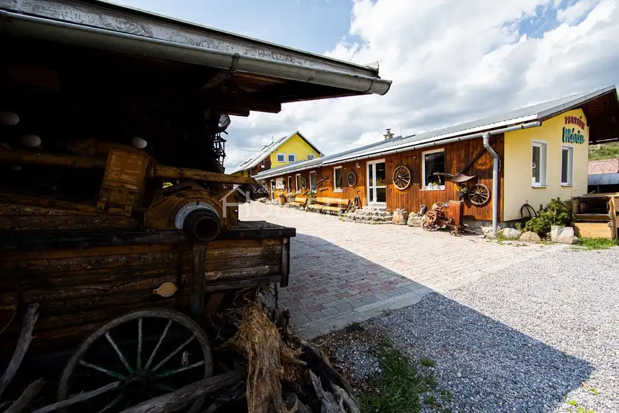
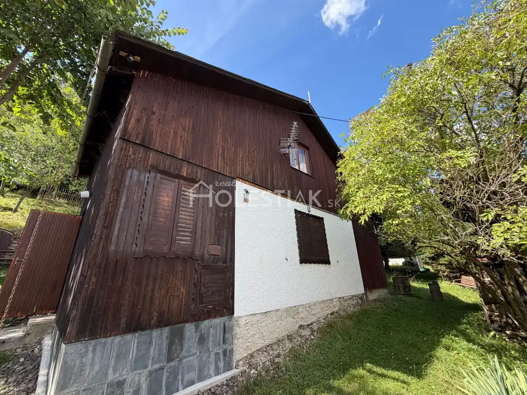
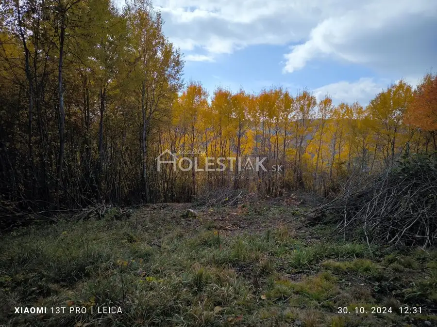

Predaj · Záhradná chatka
Predám peknú chatku - Zákopčie s väčším pozemkom
Zákopčie
45 300 €2 265 € za m²






- Plocha20 m²
- StavČiastočná rekonštrukcia
- VlastníctvoOsobné
O nehnuteľnosti
HOLESTIAK.sk reality ponúka na predaj drevenú peknú chatku s popisným číslom v krásnom prostredí v obci Zákopčie. Vysporiadaný pozemok. Plocha: úžitková 20 m2, v cene väčší pozemok: 1665 m2, CKN, 1/1, bez tiarch. Vlastná pitná voda, v suteréne je suchá, kvalitná, chladná pivnica. Pekné výhľady v prírode, les, lúka, pokoj. Cena: 45300 €, dohoda možná. Ochotne vám poskytneme ďalšie informácie a realizujeme osobnú obhliadku. PhDr. Pavol Holeštiak, PhD., RSc. holestiak.sk reality Andreja Hlinku 28/4022 01 Čadca tel.: +421 905 425 576e-mail: pavol@holestiak.sk
Parametre
- Doprava
- Cesta
- Druh
- Záhradná chatka
- Dátum zverejnenia
- 15. 04. 2024
- Energetická náročnosť
- Z klasických materiálov
- Energetický certifikát budovy
- nie je
- Orientácia
- Juhozápadná
- Plocha pozemku
- 1665 m²
- Počet nadzemných podlaží
- 1
- Počet podzemných podlaží
- 1
- Prístupová komunikácia
- Trávnatá, Asfaltová
- Stav nehnuteľnosti
- Čiastočná rekonštrukcia
- Terén pozemku
- Prevažne rovinatý
- Typ
- Predaj
- Typ konštrukcie
- Drevená
- Vlastníctvo
- Osobné
- Vybavenie
- Sklad, Záhrada
- Zastavaná plocha
- 24 m²
- Úžitková plocha
- 20 m²
Kde to je


Ďalšie ponuky
Celá ponukaMohlo by Vás zaujímať

Komerčné priestoryNové 712 000 €+ Video Predám veľký areál Skalité, reštaurácia, penzión, rodinný dom, servis, stavebné pozemky - exkluzívne Skalité 620 m²
Chata, drevenica, zrubNové 84 000 €Predám chatu v obci Makov na Kysuciach, iba u nás Makov 52 m²
PozemokNové Cena na vyžádáníPredám pozemok pod chatu - Hlboké nad Váhom, iba u nás Hlboké nad Váhom 470 m²